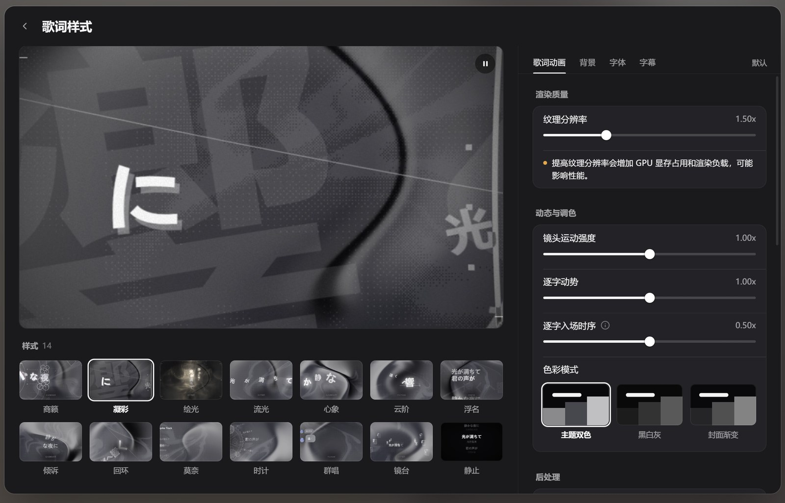
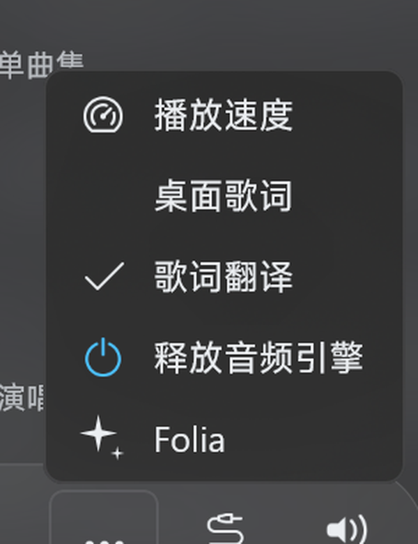

01 — 真身
你看到的是真正的 Folia
没有重画一帧动画。插件把上游 Folia 的渲染器原样打包，交给原生 WebView2 宿主实时绘制； 宿主只负责窗口、透明合成与音频采样。所以这里的每一个画面，就是 Folia 本身。
逐字发光
每个字都有自己的入场时序与辉光，跟着音节的起落亮起来，而不是整行淡入。
封面取色
从专辑封面提取主色调，歌词配色随之流动；换一首歌，就是换一片天色。
同步到播放器
读取真实播放时间轴，拖动进度、暂停、切歌都立刻跟上，不是猜节拍。
02 — 十四种气质
同一句歌词，十四种呼吸
从安静的排版，到流动的光。每一款都是 Folia 的官方样式，一键切换。
截图取自真实渲染器，金色主题为展示效果；插件内默认跟随封面与深浅色。
03 — 流畅
看不见的顺滑
原生 WebView2 + 硬件合成，14 款样式逐一实测，帧率稳定在 100 FPS 以上； 即使播放页完全透明、同时叠加在桌面之上，也没有掉帧。
0FPS
实测峰值
0+
14/14 样式下限
0次
外部网络请求
0s
逐字时间轴循环
逐帧绘制 · 无跳帧 · 无闪烁

05 — 一样的手感
和 Folia一样的设置页
设置页不是另做的简化版，而是沿用 Folia 的界面与参数体系：左侧实时大预览， 右侧调纹理、镜头、逐字动势与色彩模式，改一个值，画面立刻变。
- 14 种样式、纹理分辨率、镜头运动强度全部开放
- 实时大预览由真实渲染器绘制，所见即所得
- 与 Folia 一致的标签页与滑块，不需要重新学
06 — 开始使用
四步，装进播放器
需要 Salt Player for Windows 1.19.0 与 Windows 10 / 11 x64。
-
1
下载插件包
从 GitHub Releases 取
spw-folia-0.3.0.spmod。 -
2
放进插件目录
%APPDATA%\Salt Player for Windows\workshop\plugins，然后重启播放器。 -
3
授予 class-transform 权限
插件需要读取播放器类才能注入菜单项，首次启用时会提示。
-
4
在「更多」里打开 Folia
播放页右下角 → 更多 → Folia，即刻进入歌词可视化。

07 — 一分钟巡览
如果只想看一遍
从真身、样式，到透明桌面与安装，一段不加速的实拍。画面全部来自插件真实渲染， 由无头浏览器逐帧录制，没有任何后期特效。
把夜晚交给一行歌词。